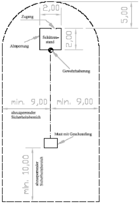
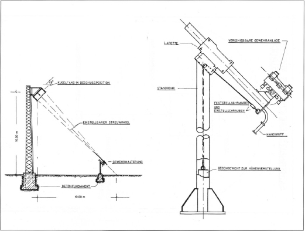
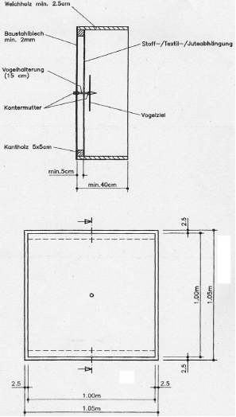
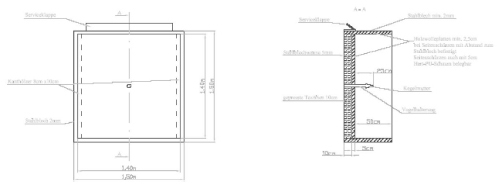
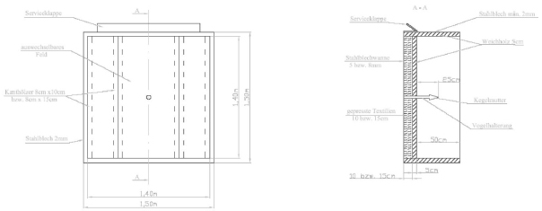
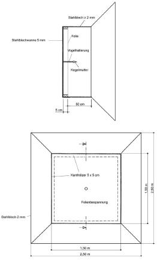

7.1 Beschreibung
Auf Vogelschießständen werden Ziele aus überwiegend weichem Holz in einem Geschossfangkasten mit eingespannten Schusswaffen oder Armbrüsten (den Schusswaffen gleichgestellte Gegenstände) beschossen. Das Schießen mit Armbrüsten wird in Kapitel 8 behandelt. Sofern die Armbrüste aus sicherheitstechnischen Gründen jedoch wie Schusswaffen einzuspannen sind, müssen die entsprechenden Vorgaben von Kapitel 7 sinngemäß angewendet werden.
Die Ziele werden horizontal (Flachstand) oder bis zu Steigungswinkeln von grundsätzlich 45° in einer Höhe bis zu 10 m (Hochstand) sitzend oder stehend beschossen.
Aus Gründen der äußeren Sicherheit ist der Schwenkbereich der jeweils eingespannten Waffe auf den Geschossfangkasten zu begrenzen. Im Geschossfang müssen die Geschosse sicher aufgenommen werden. Ungeachtet der Höhe des Zieles ist die Rückwand des Geschossfangkastens horizontal und vertikal zur Seelenachse der Waffe auszurichten.
Die Standsicherheit und Gebrauchstauglichkeit des Bauwerks müssen gegeben sein und nachgewiesen werden. Die jeweiligen einschlägigen Bauvorschriften sind einzuhalten. Zudem sind Vorschriften über Trag-, Hebewerkzeuge und Krane sowie Stahlseile und deren Befestigungen zu beachten.
Die Schussentfernung beträgt ca. 10 m beim Schießen mit DL-Waffen und ca. 13 m bei der Verwendung von Feuerwaffen. Als Schussentfernung wird der Abstand zwischen dem Lafettenkopf und der Rückwand des Geschossfangkastens als feste Bezugspunkte angenommen. Es darf mit Zustimmung eines SSV von den oben angegebenen Schussentfernungen abgewichen werden, wenn gewährleistet wird, dass die gedachte Verlängerung der Laufmittelachse mit der Neigung des Geschossfangkastens gemäß Abbildung 7.9.2 aufeinander abgestimmt und die äußere Sicherheit gewährleistet sind.
Neben dem Betreiben separater Vogelschießstände besteht die Möglichkeit, Geschossfangkästen in bestehenden Schießständen als Flachstand auf Zwischenentfernungen der Schießbahn aufzustellen.
Die Anordnung der Einrichtungen und die Grundlagen ihrer jeweiligen Bauart sind in den beigefügten Zeichnungen der Nummern 7.9.1 bis 7.9.6 dargestellt.
Verwendet werden im Allgemeinen LW als Büchsen in unterschiedlichen Kalibern oder Flinten und Weichbleigeschosse. Die zulässige E0 wird durch die Ausführung des Geschossfangkastens und die Art der Waffe sowie Munition bestimmt und von einem SSV festgelegt.
Bei der Verwendung von Kipplaufflinten kann die Einspannung aufgrund der Waffenkonstruktion, die nur an den Läufen erfolgt, für eine dauerhafte Nutzung problematisch sein. Bewährt hat sich der Einsatz von zu Einzelladern umgebauten Repetierflinten, die mit dem Verschlussgehäuse (Basküle) in der Einspannvorrichtung fest verschraubt werden.
Folgende LW sind zulässig:
Repetiergewehre (Mehrlader) dürfen nur als Einzellader verwendet werden. Selbstladewaffen und kombinierte LW sind nicht zulässig.
Die jeweils zulässige Munitionsart ist auch hinsichtlich ihrer E0 von einem SSV festzulegen. Je nach Bauart des Geschossfangkastens werden im Wesentlichen die in Tabelle 7.1 angegebenen Munitionsarten verwendet:
| Kaliber | Geschossart | Geschossmasse [g] | E0 [J] |
| 4,5 mm | Blei (Diabolo) | 0,5 | 7,5 |
| .22 Z | Blei | 1,8 | 50 |
| .22 l.r. | Blei | 2,6 | 200 |
| 6 mm Flobert | Blei | 1,0 | 40 |
| 9 mm Flobert | Blei | 4,0 | 100 |
| GK (z. B. 8,15 x 46 R) | Blei | Einzelgeschoss | 1 000 ≤ E0 ≤ 1.200 |
| 12/16/20 | Blei (FLG) | Einzelgeschoss | 1 000 ≤ E0 ≤ 1.200 |
| 12/16/20 | Bleischrot Ø ≤ 2,5 mm | Schrotvorlage 24 g |
Tabelle 7.1 Munition für Vogelschießstände
Das Schießen mit (jagdlichen) FLG, anderen Kalibern oder Laborierungen ist nicht zulässig, wenn deren E0 mehr als 1 200 J beträgt.
7.2 Absperrung für Personen
Durch eine Absperrung des Gefahrenbereiches gemäß Zeichnung 7.9.1 sind unbefugte Personen fernzuhalten.
Bei Hochständen, deren Ziele in einer Höhe von weniger als 10 m angebracht sind, muss der Gefahrenbereich zur Seite linear entsprechend der geringeren Höhe vergrößert werden. Die Mindestabstände von Personen zur Zieldarstellung, die sich aus den vorgeschriebenen Gefahrenbereichen (Abbildung 7.9.1) ergeben, bleiben dadurch erhalten.
Dies ergibt bei bestehenden Schießständen ohne Neigung des Geschossfangkastens für den Horizontalbeschuss einen seitlichen Mindestabstand von je 15 m. Wenn Personen von außen in die Geschossflugbahn laufen können (grundsätzlich auf allen Flachständen), ist der Gefahrenbereich fest (z. B. mit Absperrgittern) ca. 1,00 m hoch abzusperren. Flatterband oder/und einlagige Stangenkonstruktionen sind dann alleine nicht zulässig. Hinter dem Geschossfangkasten dürfen sich während des Schießens im Gefahrenbereich keine Personen aufhalten.
Je nach Örtlichkeit kann nach Maßgabe eines SSV zudem der Einsatz von Sicherungsposten erforderlich sein.
7.3 Schützenstand
Der Schützenstand ist in einer Größe von mindestens 2,00 m x 2,00 m auszuführen und grundsätzlich separat abzutrennen. Flatterband o. Ä. ist für diese Abtrennung ausreichend. Der Zugang zum Schützenstand soll von hinten erfolgen (Abbildung 7.9.1).
Die Schützen müssen einen sicheren und festen Stand bzw. eine sichere Position beim Schießen haben.
7.4 Gewehrhalterung
Die sicherheitstechnisch notwendige Begrenzung des Schwenkbereiches der Schusswaffe auf den Geschossfangkasten erfolgt durch eine auf dem Schützenstand montierte Gewehrhalterung, die mit dem Boden des Schützenstandes stabil verbunden sein muss.
7.4.1 Technische Ausführung einer Gewehrhalterung
Nach dem Prinzip der Zeichnung Nummer 7.9.2 besteht die Gewehrhalterung zur Aufnahme der Waffe meist aus einem Standrohr mit Grundplatte, das auf einem Betonsockel aufgeschraubt ist. In einer Lafette am oberen Ende des Standrohres wird das Gewehr eingespannt und justiert. Das Standrohr ist so zu dimensionieren und eventuell abzustützen, dass dessen Durchbiegen oder Abbrechen durch z. B. Anlehnen der Schützen ausgeschlossen ist. Es muss sichergestellt sein, dass das Gewehr durch den Rückstoß seine Lage in der Halterung nicht verändern kann. Ferner darf die Waffe nicht durch andere Einwirkungen wie z. B. Drücken gegen den Schaft, aus dem zulässigen Schwenkbereich gebracht werden. Der zulässige Schwenkbereich des Gewehres ist auf 0,20 m zu den Innenschürzen des Geschossfangkastens zu begrenzen.
Die Lafette besteht aus einer Vorrichtung, die eine Führung enthält, und einem hierin laufenden Gleitstück, das die Einspannvorrichtung für das Gewehr trägt. Von dem hinteren Ende des Gleitstückes der Lafette verläuft ein Drahtseil über eine Rolle in das Standrohr hinein. Am Ende des Seils befindet sich ein Ausgleichgewicht. Es hält das Gleitstück in der jeweiligen Höhenlage und dämpft bei einer Schussabgabe den Rückstoß.
Die Gewehrhalterung ist in Höhe und Seite über die zulässige Fläche des Geschossfanges schwenkbar auszuführen. Sie ist im Schwenkbereich justierbar auf die Beschussfläche zu begrenzen. Die Einstellung der Gewehrhalterung erfolgt auf die Mitte des Geschossfangs mit einer Toleranz, die nur das Beschießen von Zielen innerhalb der zulässigen Beschussfläche ermöglicht. In dieser Position wird die Einspannvorrichtung arretiert.
Durch die Verschiebung des Gleitstückes der Lafette in Längsrichtung durch den jeweiligen Schützen wird die Anschlagshöhe des eingespannten Gewehres verändert und auf den Körper angepasst. Die axiale Ausrichtung des Gewehrs darf dabei nicht verändert werden.
Es kommen auch andere Möglichkeiten der Waffenmontage in Betracht, wenn gewährleistet ist, dass der Schwenkbereich des Gewehres in der Höhe und Seite auf 0,20 m Abstand zu den Innenschürzen begrenzt ist. Insbesondere bei bestehenden Schießständen ist das axiale Verschieben des Gewehrs häufig nicht möglich. Zum Ausgleich unterschiedlicher Körpergrößen wird in solchen Fällen ein Podest ausgelegt. Das Podest ist in einer stand- und trittsicheren Fläche von mindestens 1,00 m x 1,00 m auszuführen. Die Ränder sind nach DIN 4844 zu markieren.
7.4.2 Abstimmung der Gewehrhalterung zum Geschossfangkasten
Die Gewehrhalterung und der Geschossfangkasten sind derart aufeinander abzustimmen, dass der Schusswinkel dem Neigungswinkel des Geschossfangkastens entspricht und ein Vorbeischießen am Kasten ausgeschlossen ist. Die in Nummer 7.1 genannten Schussentfernungen sind einzuhalten.
Bei der Berechnung des Neigungswinkels des Geschossfangkastens von Hochständen ist somit neben der Höhe des Geschossfangkastens auch die Höhe der Gewehrhalterung zu berücksichtigen. Bei vorhandenen Schießständen ohne Neigung des Geschossfangkastens für den horizontalen Beschuss muss die Höhe der Gewehrhalterung annähernd der Höhe der Vogelhalterung entsprechen.
Die Abstimmung und die dazugehörige Berechnung sind durch einen SSV zu prüfen und zu dokumentieren.
7.5 Geschossfang
7.5.1 Allgemeine Anforderungen
Alle Stahlbleche, die nach Nummer 7.5 zu verwenden sind, müssen eine Zugfestigkeit von ≥ 300 N/mm2 aufweisen.
Die Bauteile des Geschossfangs sind je nach zugelassener E0 wie folgt zu bemessen:
| E0 | Boden bzw. Materialdicke der Stahlblechwanne | Dicke der Füllung | Abdeckung der Füllung |
| ≤ 7,5 J | 2 mm | ohne Füllung | – |
| < 50 J | 5 mm | 10 cm | 5 cm Holzwolleplatten |
| ≤ 200 J | 5 mm | 10 cm | 4 cm – 4,5 cm Weichholz |
| > 200 J | 8 mm | 15 cm | 4 cm – 4,5 cm Weichholz |
| ≤ 2,5 mm Bleischrot | 5 mm | ohne Füllung | Folienbekleidung |
Tabelle 7.5.1 Geschossfangmaterialien bei Vogelschießständen
In der Regel ist es erforderlich, unterhalb des Geschossfangs wasserundurchlässige Folien auszulegen (zwischen Geschossfangmast und Schützenstand in einer Breite von mindestens 5 m), um den Eintrag von Blei in den Boden auszuschließen.
Vor jedem Schießen ist im Bedarfsfall das zerschossene Feld eines Geschossfangs bzw. die Abdeckung oder Folie zu erneuern und die Füllung zu ergänzen.
Zum Arbeiten am Geschossfang (z. B. Auswechseln beschädigter Teile, Anbringen von Zielen) muss der Kasten entweder heruntergelassen werden oder diese Tätigkeiten müssen von Geräten (Hubwagen, Gerüst, Leitern) sicher durchgeführt werden können. Nach Beendigung des Schießens sollte der Geschossfang ganz heruntergelassen und gegen Witterungseinflüsse geschützt werden.
7.5.2 Geschossfang für DL-Waffen
Für das Schießen mit DL-Waffen ist zum Auffangen der Geschosse ein Geschossfang gemäß Zeichnung Nummer 7.9.3 zu errichten. Die Rückwand des Geschossfangkastens muss 1,00 m x 1,00 m groß und aus Stahlblech der Dicke ≥ 2 mm (kaltgewalztes Feinblech in Güte DC 01 nach DIN EN 10130 – Zugfestigkeit ≥ 300 N/mm2) gefertigt sein.
Für bestehende Vogelschießstände für Feuerwaffen ist bei Rückwänden aus Weichholz ein mindestens 1,00 m x 1,00 m großes Stahlblech gleicher Dicke mittig auf der Innenseite der Rückwand zu befestigen. Der zulässige Schwenkbereich des Gewehres ist dann wie bei der Verwendung eines separaten Geschossfangkastens bis auf 0,20 m zu den Rändern des Bleches zu begrenzen. Der Einbau zusätzlicher Schürzen ist nicht erforderlich.
Die 0,40 m tiefen Schürzen bestehen aus Weichholzbrettern der Dicke ≥ 25 mm (oder gleichwertiger Baustoff) und sind rechtwinklig zur Rückwand anzubringen. Die Schürzen sind innen mit Hartschaumplatten der Dicke ≥ 30 mm zur sicheren Aufnahme von Geschossen bzw. deren Fragmente zu bekleiden. Andere Baustoffe sind durch einen SSV zu prüfen und zuzulassen.
7.5.3 Geschossfang für Feuerwaffen mit Randfeuerpatronen E0 ≤ 50 J
Bei diesen LW im Kaliber .22 l.r. werden ausschließlich Patronen im Kaliber .22 Z verschossen. Der zum Auffangen der Projektile dienende Geschossfangkasten besteht aus einer 10 cm tiefen Stahlblechwanne mit einer Füllung aus eingepressten Textilien gemäß Abbildung 7.9.4. Die Abdeckung in Schussrichtung erfolgt mit handelsüblichen feinwolligen Holzwolleplatten der Dicke 5 cm nach DIN EN 13168. Es wird empfohlen, die Kanthölzer zur Anbringung der Grundfläche so auszurichten, dass normgerechte Platten eingesetzt werden können.
Eine ausreichend dimensionierte Serviceklappe ist ebenfalls vorzusehen (Nummer 7.5.4). Bei bestehenden Bodenbekleidungen aus Weichholzbrettern der Dicke 4 cm darf alternativ schützenseitig ein Rückprallschutz aus Polyurethan-Hartschaummaterial nach DIN EN 13165 bzw. Polystyrol (z. B. Styrodur) der Dicke ≥ 5 cm oder feinwolligen Holzwolleplatten der Dicke 2,5 cm vorgesehen werden.
Die Innenbekleidung der Seitenschürzen aus 2 mm dickem Stahlblech, hat mit 5 cm dicken Hartschaumplatten oder 2,5 cm dicken Holzwolleplatten auf 2,5 cm Abstandslattung zu erfolgen. Dabei ist sicherzustellen, dass die Vorderkanten der Schürzen bündig schließend mit Weichholz abgedeckt sind.
Die Rückwand aus 5 mm Stahlblech (Zugfestigkeit 300 N/mm2) hat bei neu zu errichtenden Anlagen eine Größe von mind. 1,50 m x 1,50 m aufzuweisen. Der Geschossfang ist kastenartig mit rechtwinklig zum Boden stehenden Seitenschürzen auszubilden. Bei einer größeren Grundfläche des Kastens in der Breite zum Einsatz mehrerer Ziele nebeneinander, sind die Felder durch den Einsatz vertikaler Innenschürzen zu trennen. Diese Schürzen sind aus Stahlblech der Dicke ≥ 2 mm herzustellen und beidseitig mit jeweils 5 cm dicken Hartschaumplatten vollflächig zu bekleiden.
Bei bestehenden Vogelschießständen sind im Rahmen des Bestandschutzes bei der Nutzung ausschließlich mit Randfeuerpatronen des Kalibers .22 Z Geschossfangkästen mit den inneren Abmessungen von weniger als der nach Nummer 7.5.1 vorgegebenen Größe von 1,50 m x 1,50 m (meist 1,00 m x 1,00 m, mindestens 0,80 m x 0,80 m) nicht zu beanstanden. Bei solchen oft nur regional verbreiteten Vogelschießständen darf nur auf kleinere Vogelziele aus Weichholz (Außenabmessungen max. 40 cm x 40 cm) geschossen werden.
Bei Altanlagen mit untermaßigen Geschossfangkästen ist durch Anbringen von sogenannten Außenschürzen die vorgeschriebene Größe von 1,50 m x 1,50 m zu erreichen. Diese Außenschürzen werden außen umlaufend an die vorhandenen Seitenschürzen dicht anschließend befestigt bzw. geschraubt und stehen in einem Winkel von 90° seitlich ab. Sie sind aus Stahlblech der Dicke ≥ 2 mm (Zugfestigkeit ≥ 300 N/mm2) zu fertigen und schützenseitig mit Holzwolleplatten der Dicke 2,5 cm als Rückprallschutz zu bekleiden.
Bei nebeneinander angeordneten kleineren Geschossfangkästen können grundsätzlich die Flächen der jeweils daneben liegenden Kastenflächen auf die notwendige abzudeckende Grundfläche hinzugerechnet werden.
7.5.4 Geschossfang für Feuerwaffen 50 J < E0 ≤ 200 J
Zum Auffangen der Geschosse dient ein Geschossfangkasten gemäß Abbildung 7.9.5. Die Rückwand in der Größe von mindestens 1,50 m x 1,50 m ist mit einer 10 cm tiefen Wanne auszubilden, in der Textilien eingepresst werden. Die Füllung wird zur Schussrichtung hin mit Weichholzbrettern (4,0 cm bis 4,5 cm dick) abgedeckt. Sofern Nägel oder Schrauben zum Befestigen der Bodenbohlen eingesetzt werden, müssen deren Köpfe mindestens 10 mm tief versenkt und die Löcher mit Weichholzdübeln geschlossen werden. Wenn nur auf Ziele geschossen wird, die mittig im Kasten beschossen werden, bietet sich der Einbau eines separaten Feldes an (Abbildung 7.9.5). Werden jedoch zudem sogenannte Pfänderziele beschossen, die vor der zulässigen Beschussfläche im Kasten verteilt werden, wird der Einbau eines separaten Feldes wegen der zusätzlich eingebauten Kanthölzer nicht empfohlen.
Die außen 0,65 m tiefen Seitenschürzen müssen rechtwinklig zur Rückwand angeordnet werden. Sie sind aus Stahlblech der Dicke ≥ 2 mm zu fertigen und innen mit feinwolligen Holzwolleplatten der Dicke 3,5 cm nach DIN EN 13168 auf Abstandslatten der Dicke 2,5 cm zu bekleiden. Dabei ist sicherzustellen, dass die Vorderkanten der Schürzen bündig schließend mit Weichholz abgedeckt sind.
Von oben ist eine Serviceöffnung in der Stahlblechwanne vorzusehen, um das Einbringen und Befestigen der Füllung zu ermöglichen und diese kontrollieren zu können. Die Abdeckung der Serviceöffnung erfolgt mit einem der Dicke der Rückwand entsprechenden Stahlblech. Die Klappe der Abdeckung muss verriegelt oder verschlossen sein. Der Einbau einer zusätzlichen Klappe in der unteren Schürze wird zum Herausnehmen von Materialien und Geschossen empfohlen.
Beim gesamten Weichholzaufbau des Geschossfangkastens ist einlagiges Material zu verwenden. Es muss astfreies Material eingesetzt werden, evtl. vorhandene Äste sind auszubohren und die entstandenen Löcher sind mit entsprechend dicken Holzpfropfen zu schließen. Der Weichholzaufbau des Geschossfangkastens darf auf der dem Ziel zugewandten Seite nicht mit Lackfarbe gestrichen werden, um Verhärtungen zu vermeiden. Als Witterungsschutz ist Holzschutzlasur zulässig.
7.5.5 Geschossfang für Feuerwaffen E0 > 200 J
Der Geschossfangkasten zum Aufnehmen von Geschossen mit E0 > 200 J entspricht bis auf die Dicke der Rückwand und Wannentiefe dem Kasten für das Kaliber .22 l.r.
Gemäß Abbildung Nummer 7.9.5 besteht die Rückwand mit 15 cm tiefer Wanne aus Stahlblech der Dicke ≥ 8 mm.
Ansonsten gilt Nummer 7.5.4 entsprechend.
7.5.6 Geschossfang für Flinten mit Schrot
Für das Schießen mit Flinten und handelsüblicher Schrotmunition ist der in Nummer 7.9.6 dargestellte Aufbau erforderlich, der auch in bestehenden Geschossfangkästen für Einzelgeschosse erstellt werden kann (z. B. zur temporären Nutzung). Seitenschürzen und Trichter bestehen aus Stahlblech der Dicke ≥ 2 mm und die Rückwand aus Stahlblech der Dicke ≥ 5 mm (kaltgewalztes Feinblech in Güte DC 01 nach DIN EN 10130). An der Außenseite können die Bleche mit Winkelprofilen versteift werden.
Im Abstand von 5 cm ist die Rückwand der Stahlblechwanne mit einer von den Schroten durchdringbaren Folie abzudecken. Die Folie hält einen Teil der auftretenden Bleistäube und Schrotsplitter zurück.
7.5.7 Geschossfang mit Stahllamellen
Neben den genannten Ausführungen der Geschossfangkästen kommt ein Aufbau mit Stahllamellen (Nummer 2.8.5 ff.) für alle Kaliber in Betracht. Die Maße (Grundfläche 1,50 m x 1,50 m, Schürzentiefe innen, Abstand des Zieles zur Vorderkante usw.) müssen beim Aufbau eingehalten werden.
Wesentlich ist die frontseitige Abdeckung der Lamellen als Splitterschutz, die so abzustimmen ist, dass Projektile sicher diesen durchdringen können und an den Lamellen entstehende Geschossfragmente zuverlässig zurückgehalten werden. Geschossfangkästen mit Stahllamellen sind im Einzelfall von einem SSV zu prüfen und zuzulassen.
7.6 Absturz-/Fallsicherung
Der Geschossfangkasten muss in der oberen Position (Beschusshöhe) unabhängig zum Zugseil arretiert und das Seil entlastet werden. Generell ist auch eine Absturzsicherung erforderlich, die beim Verlust der Seilfunktion (z. B. Bruch des Seiles oder Defekt an der Transporteinheit) sicherstellt, dass der Absturz des Geschossfanges auch während des Verfahrens ausgeschlossen ist. Auf die einschlägigen Vorschriften der Berufsgenossenschaft und die DIN EN 13411-5 wird verwiesen. Manuell zu bedienende Seilzuganlagen dürfen in neuen Anlagen nicht mehr verwendet werden.
In bestehenden Anlagen ist zu prüfen, ob der Einbau einer nachträglich einzubauenden Fallsicherung erforderlich ist, die beim Bruch des Tragseiles sofort das Sicherungsseil blockiert.
Der Geräteführer der Seilzuganlage ist sowohl gegen einen eventuellen Absturz des Kastens als auch gegen einen Seilbruch zu schützen.
7.7 Zielehalterungen
Die Abmessungen der Geschossfangkästen ergeben sich aus den Abbildungen 7.9.3 bis 7.9.6. Zur Befestigung der Ziele ist in der Mitte des Geschossfangs ein mit Gewinde versehener Stahlbolzen mit einem Durchmesser von ca. 15 mm an der rückwärtigen Stahlblechwand des Geschossfangkastens mittig rechtwinkelig anzuschweißen oder gekontert zu verschrauben. Gegen eine Befestigung des Stahlbolzens außerhalb der Mitte (z. B. 10 cm tiefer), damit das Ziel beispielsweise nicht zerschossen sondern an einer Linie durchtrennt wird, bestehen keine Bedenken, wenn die allgemeinen Kriterien wie Abstand zur Rückwand und Beschussfläche eingehalten werden. Eine solche Anbringung ist vom SSV zu prüfen.
Der Bolzen darf nicht über die seitlichen Schürzen hinausragen. Auf das vordere Ende des Bolzens wird ein Distanzstück aus Kunststoff oder Holz mit einer Länge von etwa 100 mm aufgesteckt. Alternativ kommt auch das Aufschrauben einer Kontermutter in Frage.
Die Befestigung des Zieles erfolgt durch eine kegelförmige, spitz zulaufende Mutter aus Stahl. Die Kegelmutter hat an der Basis einen Durchmesser von 35 mm und eine Höhe von 80 mm. Der Durchmesser des Distanzstückes muss kleiner sein als der Durchmesser der Kegelmutter damit das Distanzstück nicht angeschossen werden kann. Alternativ zur Kegelmutter darf ein Stahlkeil eingesetzt werden, wenn der maximal zulässige Winkel von 25° eingehalten wird.
Bei der Verwendung von DL-Waffen ist ein Stahlbolzen mit ca. 8 mm Durchmesser ausreichend. Die Kegelmutter darf bei gleichem Material kleiner sein als die oben genannten Maße. Sie muss jedoch den Winkelverhältnissen entsprechen, die durch die oben beschriebene Kegelmutter vorgegeben sind und das sichere Ablenken der Geschosse gewährleisten (max. Winkel von 25°).
Gebogene Zielhalterungen sind nicht zulässig. Außer den als Zielhalter dienenden Metallteilen und den Schrauben zum Befestigen der Bohlen, deren Köpfe versenkt werden müssen, dürfen in dem Inneren des Geschossfangkastens zur Vermeidung abprallender Geschosse bzw. -teile keine Metallteile vorhanden sein.
Neben der Befestigung der Ziele auf der Gewindestange kommt insbesondere das Einsetzen von sog. Pfänderzielen auf meist horizontal aber auch vertikal in Weichholzhaltern eingesetzten Weichholzleisten in Frage. Die Halter werden in den Schürzen eingesetzt. Die Leisten dürfen nur maximal so dick sein, wie die für die erlaubte Waffenart und Geschossenergie zugelassenen Zielholzdicken. Sie sind innerhalb des maximal zulässigen Abstands für die Ziele zur Rückwand zu positionieren.
Eine Befestigung der Ziele an oder auf einer Stange (sog. Vogelstange) vor dem Geschossfangkasten ist auch bei bestehenden Vogelschießständen nicht zulässig.
7.8 Ziele
Die Ziele (z. B. Vogelziel) sind an einer zentralen Halterung mittig im Geschossfangkasten anzubringen. Sie müssen aus astfreiem Weichholz (Tannen-, Fichten-, Pappel- oder Balsaholz) beim Beschuss mit Feuerwaffen sowie Sperr- und Balsaholz bei DL-Waffen gefertigt sein und dürfen keine Metallteile enthalten. Andere Zielmedien (z. B. Gips) und Darstellungen (z. B. Pfänder/Sternchen) dürfen nach Prüfung durch einen SSV zugelassen werden.
Die Ziele dürfen nicht über die Schürzen des Geschossfangkastens hinausragen.
Sofern im Geschossfangkasten ein separates Beschussfeld eingebaut ist, sind die Pfänder- oder Sternchenziele neben der Unterkonstruktion aus Weichholz zu positionieren. Das zwangsläufige Beschießen der Unterkonstruktion wird dadurch verhindert.
| Kaliber | Astfreies Weichholz (Maximal zulässige Dicke in mm) |
| 4,5 mm (≤ 7,5 J) | ≤ 3 (Sperr- oder Balsaholz!) |
| .22 Z | ≤ 25 |
| .22 l.r. | ≤ 40 |
| FLG 12/16/20 und GK | ≤ 150 |
| Schrot 12/16/20 | ≤ 30 (z. B. Sperrholz) |
| Sonstige | nach Einzelabnahme/Prüfung |
Tabelle 7.8 Materialdicken der Ziele für Vogelschießstände
7.9 Zeichnungen

Abbildung 7.9.1 Sicherheitsbereich für Vogelschießstände

Abbildung 7.9.2 Vogelschießstand und Gewehrhalterung

Abbildung 7.9.3 Geschossfang für DL-Waffen auf Vogelschießständen

Abbildung 7.9.4 Geschossfang für Feuerwaffen E0 < 50 J auf Vogelschießständen

Abbildung 7.9.5 Geschossfang für Feuerwaffen E0 > 50 J auf Vogelschießständen

Abbildung 7.9.6 Geschossfang für Flinten mit Schrot auf Vogelschießständen